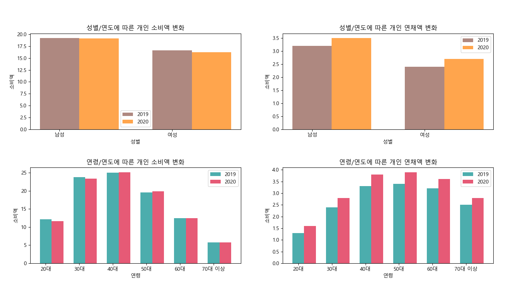
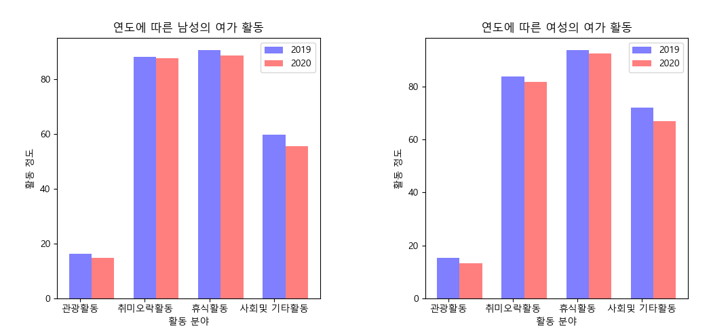
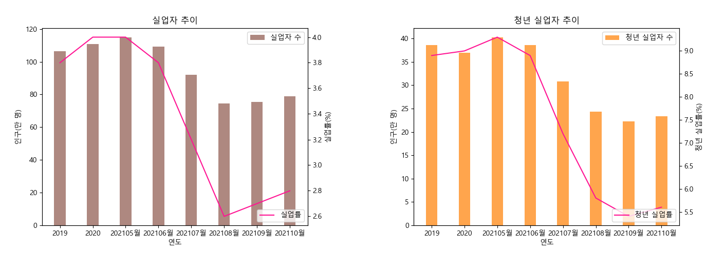

모든 성별과 연령대 2019년과 2020년대의 소비액 동일한 양상
2020년부터 연체액이 늘어나는 양상

남성, 여성 모두 2019, 2020년 여가 활동 비중의 차이가 있으나 그 정도가 크지 않음
독립표본 t 검정 필요 : 남녀 2019, 2020 연도간 여가 활동에 차이가 있는지 여부
결과 : 정규성, 등분산성을 모두 만족
stats.ttest_ind을 사용한 t 검정 결과 : 남성과 여성 수치 평균에 차이가 없다
결론: 코로나가 유행하고 거리두기가 확대되어도 여가활동의 변화는 다소 미미

실업자, 실업률의 추이: 2020년에 증가
2021 상반기까지 상승세를 유지하다 하반기에 감소